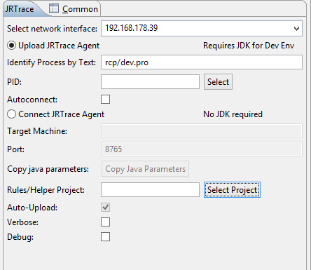
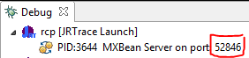
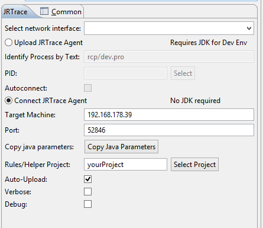

Basically there are two options: if you have a JDK for JRTrace to run: just select the target process in JRTrace on the target machine. In this case you shouldn't select any project because the actual instrumentation will be done from the development machine. If there is no JDK: use the "Copy Agent Parameters" button on the launch configuration tab and start the target process with the additional parameters that were copied to the clipboard.
The settings in the screenshot below will install the JRTrace agent into the JVM which contains "rcp/dev.pro" in the description of the process. Since no project is selected nothing will happen yet except the installation of the agent into the target JVM. The network interface is selected as "192.168.178.39". Therefore on the development machine it is required to use "192.168.178.39" as "Target Machine".
Note: if your computer has more than one network interface, an additional drop down box will appear on top of the launch dialog, see the screenshot before. In this case it is important to select the network interface to which the development machine will connect.
On the development machine, choose."Connect JRTrace Agent" and enter the ip address of the target machine which should match the "Select Network Interface" setting. The port should be visible in the debug target description on the remote machine, see the screenshots below: here the port is 52846.
For the example shown above, the picture below shows the proper settings:
